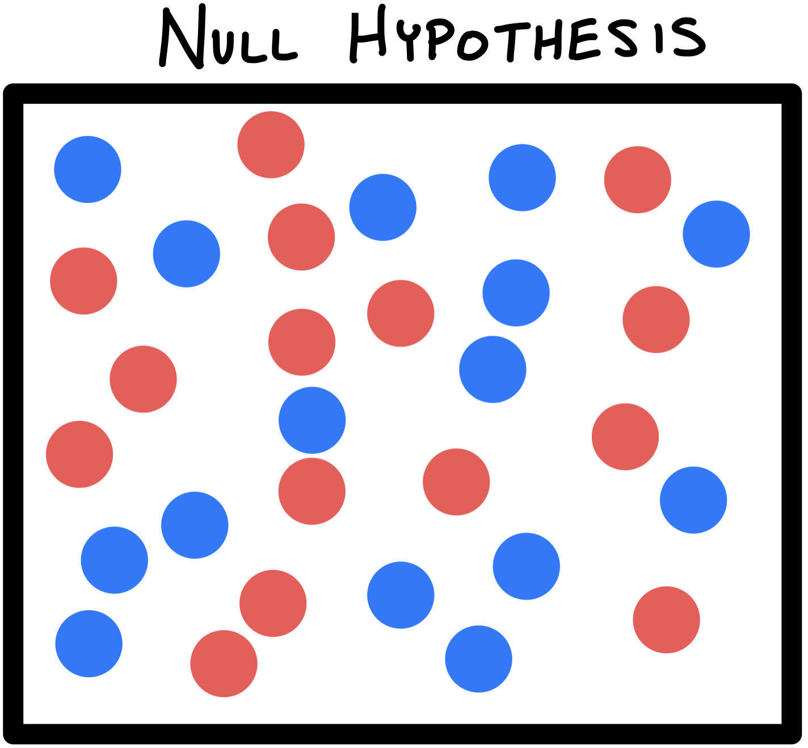
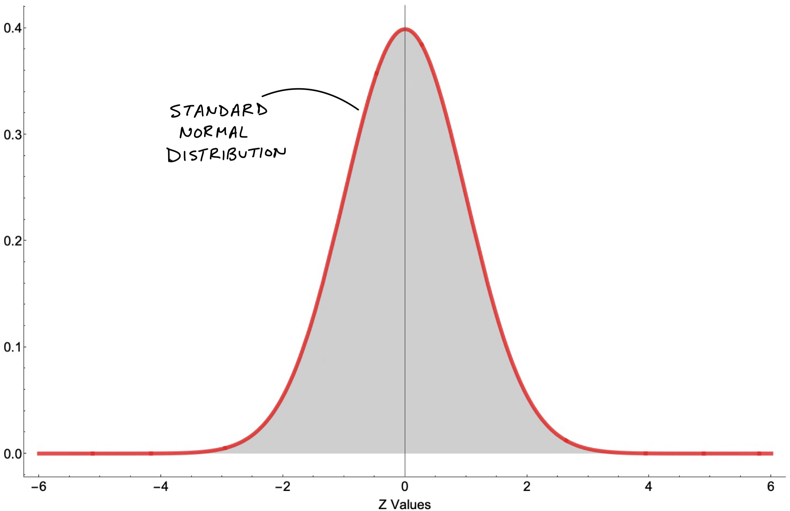
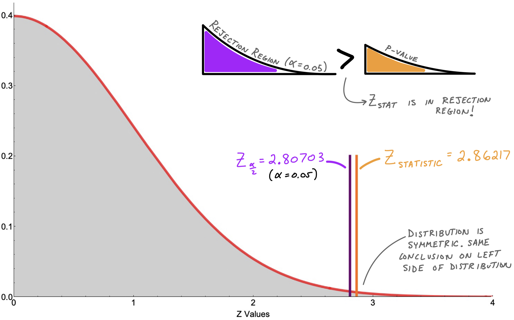

P Values
What is a P-Value! (in Hypohtesis Testing)
You might have heard P-values are importance in a student’s statistical toolbox. While teaching statistics and probability, I’ve noticed its subtle definition and conceptual underpinnings being grossly under-emphasized. This note may help clarify what a p-value is and how we use it to make decisions.
To explain what a p-value is, I will start with the “p". What does it stand for? If you’re thinking probability, then you’re correct. The tricky question becomes: the probability of what? One definition might be: a p-value is the probability of getting an observed value of the test statistic (or more extreme value), given that the null hypothesis is true. Sounds confusing, I know. Variants of this definition are also used but generally this language doesn’t help if you’re actually trying to learn it. Let’s break this topic down with the use of a story.
Conceptual Understanding!
- Imagine a container of RED and BLUE marbles (statistics is the reason marbles are still relevant in life). This container of marbles can represent our population. Let’s say we assume there are an equal number of each color. The word assume means that there is an initial beleif. We give this initial belief a special name: the Null Hypothesis.

- In order to test our Null Hypothesis, we collect a sample. Sample is another term statistics also often uses; it’s just a subset of our population.

- If our sample consists of nothing but BLUE marbles, we could ask the question: How likely is it we would get this all BLUE sample given that our initial belief was that RED and BLUE are of equal number in the container?
- This is reflected by the p-value! The p-value is the probabiliy of seeing this sample given our initial belief (or in other words, given our Null Hypothesis).
- If our p-value is low, then we have evidence AGAINST our Null Hypothesis and we say that we “reject our Null Hypothesis in favor for the Alternative Hypothesis. The Alternative Hypothesis in our marble example is that the RED and BLUE are not of equal number.
- If, on the other hand, our p-value is high, then we don’t have a good enough reason to reject our initial belief. In this case we “fail to reject our Null Hypothesis.
- We need some way of determining what is low and what is high when it comes to P-values. This is what we call $\alpha$.
Making More Concrete
Let’s make up a similar example
QUESTION: It is believed that there are an equal number of RED and BLUE marbes in a jar. A sample of size 80 is taken in which 66% of marbles are BLUE. Should we keep our initial belief?
Solution:
- Let’s say our initial belief of the proportion is denoted as $\pi_0$ (Null Hypothesis). This means: $\pi_0 = 0.50$
- We model this proportion of blue marbles in our sample as a random variable. $\hat p$ whose mean is $0.66$.
- We can assume this random varibles $\hat p$ follows a Normal Distribution so long as $n \cdot p \ge 10$ and $n \cdot (1-p) \ge 10$. This is referred to as the Rule of Sample Proportions. If these assumptions are not true, then we may approximate our distribution with a Binomial.
- $n$ is the sample size and $p$ is our proportion which we will approximate with $\hat p$ (in this case: 66%)
- If this assumption checks out, we can calculate our z-statistic:
$$Z_{statistic} = \frac{\hat p - \pi_0}{\sqrt{\frac{\pi_0 (1 - \pi_0)}{n}}}$$
- The denominator, $\sqrt{\frac{\pi_0 (1 - \pi_0)}{n}}$, is the standard error of the sampling distribution.
When we set $\pi_0 = 0.5$, $\hat p = 0.66$, and $n = 80$:
$$Z_{statistic} = \frac{0.66 - 0.50}{\sqrt{\frac{0.50 (1 - 0.50)}{80}}} = 2.86217$$
- What this allows us to do is draw a Normal Distribution and see where the $Z_{statistic}$ lies.
- First, let’s remember what a Standard Normal Distribution looks like:

- We want to compare this $Z_{statistic}$ for a $Z_{critical}$:
$$Z_{critical} = Z_{\frac{\alpha}{2}} = Z_{\frac{0.05}{2}} = 2.80703$$
where we use significance level $\alpha = 0.05$.
- Let’s Zoom in to compare these numbers and see where the P Value comes in

Conclusion
- Since $Z_{statistic}$ is greater than $Z_{\frac{\alpha}{2}}$ (which we sometimes call $Z_{critical}$), then we can immediately say that our p-value is less than $\alpha$.
- Remember what a low p-value tells us: the probability of seeing this sample given our intiial belief is LOW! Statistically sigificanly low!
- We simply reject the Null Hypothesis. We say we have enough evidence to show that it is likely untrue that there are an equal number of RED and BLUE marbes in the
WE DID IT!
- Try some practice problems on your own
- There is some controversy around the merits of p-values — think about why this might be